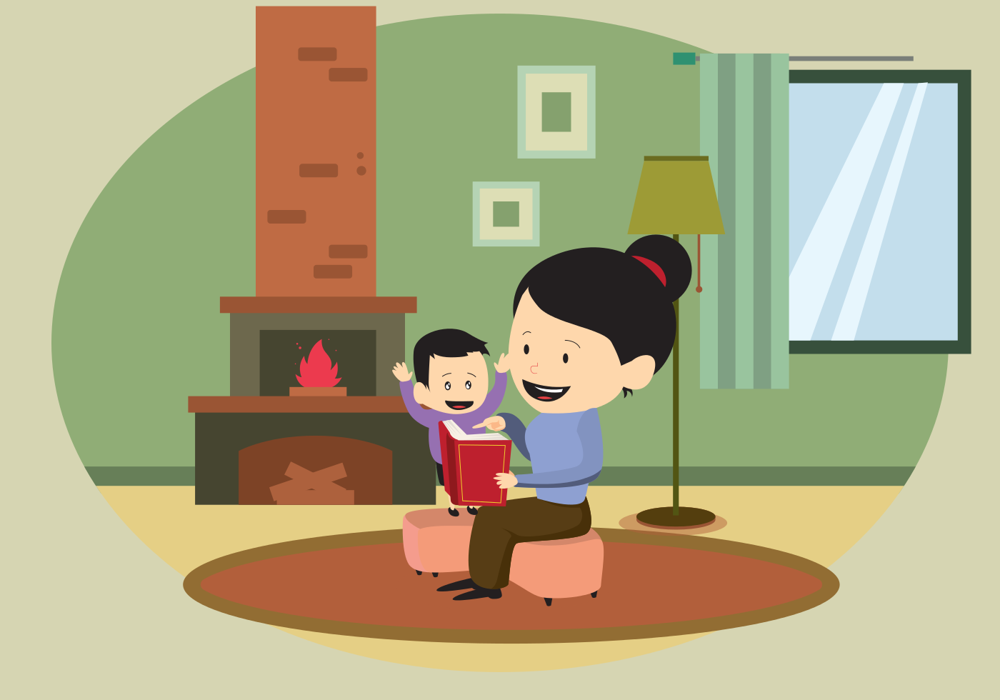

Cuentos para dormir
Publicado el 5 de abril,2019
Quiero contarte mi experiencia con los cuentos infantiles. Durante la mayor parte de mi embarazo leí o puse un audio-cuento diario por las noches a mi bebé. Aproximadamente 240 días de cuento porque sí hubo días en los que no lo hice. Te mentiría si te dijera que fueron cuentos diferentes todos los días, pero lo que sí te puedo decir es que fueron cuentos variados que traté de repetir lo menos posible, aunque mis cuentos favoritos que son 4 los repetí mas o menos unas 4 veces. Esto lo decidí hacer por las noches a una hora establecida todos los días como una rutina desde que me enteré que estaba embarazada. La ventaja de que yo misma o mi esposo lo leyera era que sentíamos aún más cercano el lazo con nuestr@ bebé, incluso en ocasiones usabamos muñecos de peluche o títeres para escenificar el cuento frente a mi vientre y mostrale o enseñarle al bebé algunos de los personajes. Tal vez si era más cansado o había que poner más empeño en buscar los títeres, hacer las voces o simplemente leerlo, pero lo que sí teniamos por seguro es que era un momento maravilloso de conexión con nuestr@ bebé. Por otro lado el poner un audio-cuento era mucho más sencillo, solo buscábamos una playlist de cuentos infantiles en plataformas de streaming (Spotify, Youtube, etc.) y poníamos uno al azar o lo escogíamos si nos llamaba la atención el título, esto también me gustaba porque mi bebé oía voces diferentes y música que por lo general era clásica. Nunca tuvo un género, a veces eran de princesas y otras de batallas, también de valores, animales, naturaleza, seres misteriosos o mágicos.
Ha sido una experiencia maravillosa que te recomiendo incluyas en tu rutina si estás embarazada.
Ahora que mi bebé ya está entre mis brazos, procuro leerle un cuento, ponerle un audio-cuento o inventarle uno justo antes de dormir, de esta manera ella ya ubica que ha llegado la hora de dormir y que comenzamos con su rutina de sueño, además de que sigues haciendo más fuerte este lazo con tu bebé, también lograrás que ubique esta actividad como parte de su rutina de sueño.
A continuación te dejo una lista con algunos de mis cuentos favoritos:
- El conejo del sueño / Mariana Pacheco
- Estrellina-El Club de Gaby / Gaby Rivero
- El juicio de los juguetes / Cuentos para niños (Gran colección)-Spotify
- Jaimito y su colmillo de marfil-El Club de Gaby / Gaby Rivero
- El pino / Álbum-La Sirenita Cuentos infantiles-Spotify
- Cuentos de buenas noches para niñas rebeldes / Elena Favilli
- Buenas noches, princesa / Disney Princesa
- Colección de cuentos / Disney Pixar
- La historia del pequeño lirón que no podía dormir / Sabine Bohlman